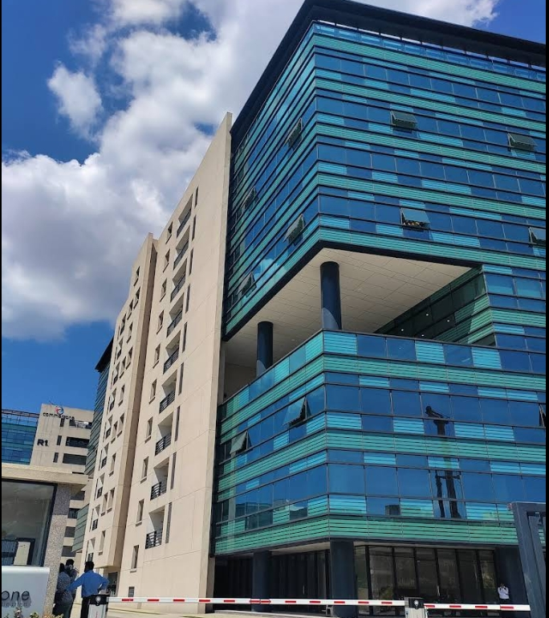

Commerzone

Commerzone Porur is a modern IT and business park located on Mount Poonamallee Road in Porur, Chennai. Developed by
K Raheja Corp and part of the Mindspace REIT portfolio, the park spans approximately 6 acres and features Grade A
office spaces designed to maximize natural light and open areas . Completed in June 2020, it comprises two towers
with a total built-up area of around 1.1 million square feet, offering amenities such as in-house food plazas,
banking facilities, 24/7 security, and ample parking . Strategically situated near Chennai International Airport and
well-connected by public transport, Commerzone Porur has become a preferred destination for IT and tech companies
seeking a sustainable and collaborative workspace in the city.